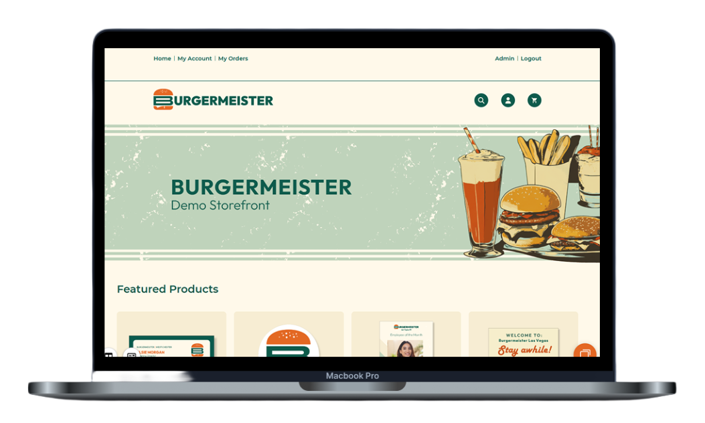
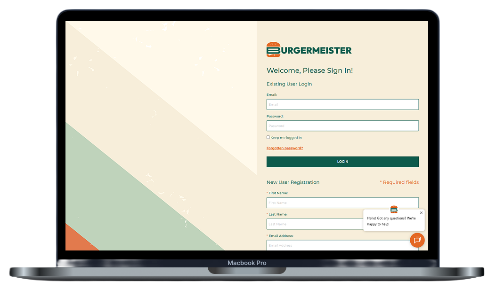

Burgermeister - eCommerce Storefront Design
Building a branded demo store that felt real enough to sell the platform.
Web-to-Print Demo Store · Devia Software
Burgermeister is a demo storefront built on the Infigo web-to-print platform to show what Devia Software's eCommerce solutions could look like when fully realized. Instead of presenting prospects with a generic out-of-the-box store, the goal was to create something branded, polished, and memorable enough for clients to imagine as their own.
Process framing
This project reads as a branded transformation story: take a functional but generic storefront, then redesign the experience so navigation, product presentation, and UI details all reinforce one cohesive identity.
My Role
I designed the visual system, hero graphics, product presentation, login layout, and front-end styling inside the Infigo platform. I also built and maintained the template products used throughout the demo experience.
Result
Burgermeister became Devia's primary demo store for sales decks and live presentations, helping communicate that Infigo could support a far more custom storefront experience than prospects expected.
Establishing the storefront look and feel
The first move was proving the brand at a glance. The top-level storefront view set the tone with a retro diner aesthetic, warm cream backgrounds, muted sage, burnt orange accents, and a hero area that felt custom instead of templated.

This overview shows the finished brand system in context, with the hero banner, navigation, and featured sections working together as one polished storefront experience.

The homepage mockup captures the full storefront in a more realistic browsing context and helps the hero presentation feel closer to a live product.
Designing a homepage that sold the concept quickly
The homepage needed to do sales work immediately. The custom illustration, logo integration, and product-first structure helped turn the demo into something prospects could emotionally connect to instead of reading it as placeholder UI.
Carrying the identity into the login flow
The login page extended the brand into a place that is usually purely functional. Diagonal color blocking and simplified layout choices helped the sign-in experience feel like part of the same system rather than a disconnected utility screen.

The laptop view makes the login experience feel more complete and shows how the visual language carried through beyond the storefront landing page.

The featured products section demonstrated platform capabilities through tangible examples like photo cards, labels, flyers, and QR-based signage.
Using products to demonstrate platform depth
Featured items were chosen to make the platform's flexibility visible. Instead of generic placeholders, the store used specific template products that revealed customization, upload, and branded merchandising possibilities.
Refining the supporting UI details
Once the larger structure was in place, the smaller interface pieces mattered just as much. Category pages and supporting navigation were treated as part of the same visual system so the whole storefront felt easy to browse and internally consistent.

Category pages were structured to feel clearer and more unified while still carrying the same brand cues established on the homepage and login screen.
Even the smallest interface details contributed to the feeling that the storefront had been intentionally designed instead of assembled from defaults.
Finishing the experience with consistent branding
Header icons, navigation details, and supporting UI treatments helped the store land as a complete branded demo. That consistency is what made the project persuasive in sales conversations and live presentations.